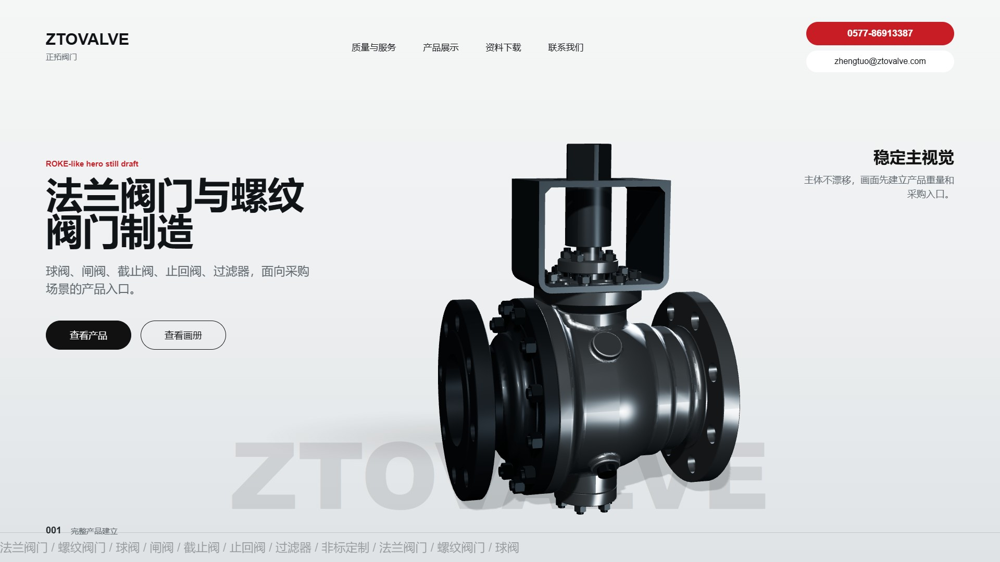
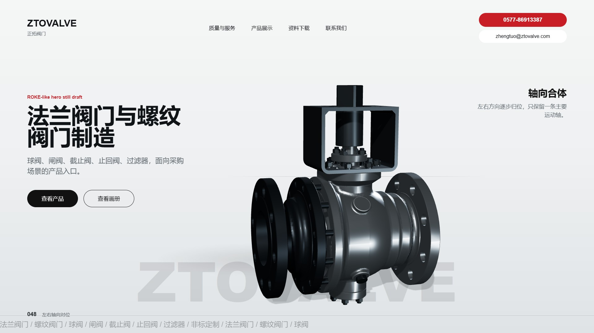
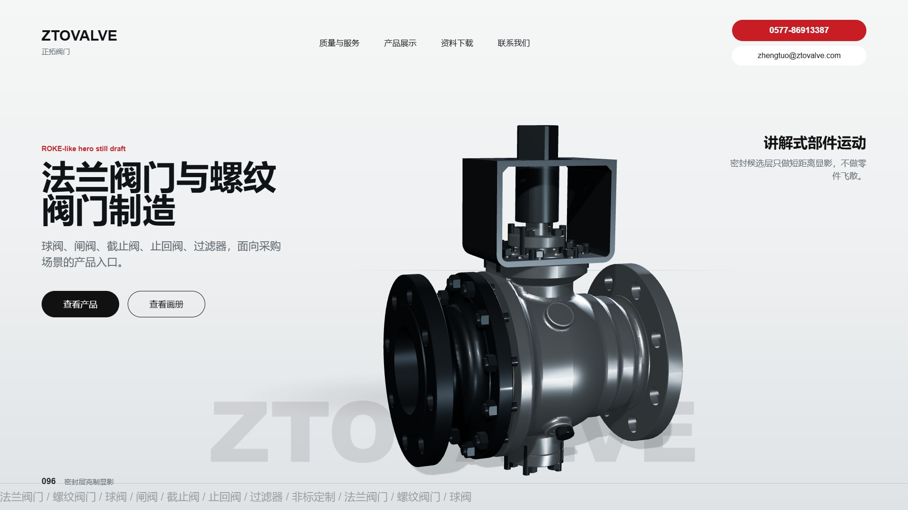
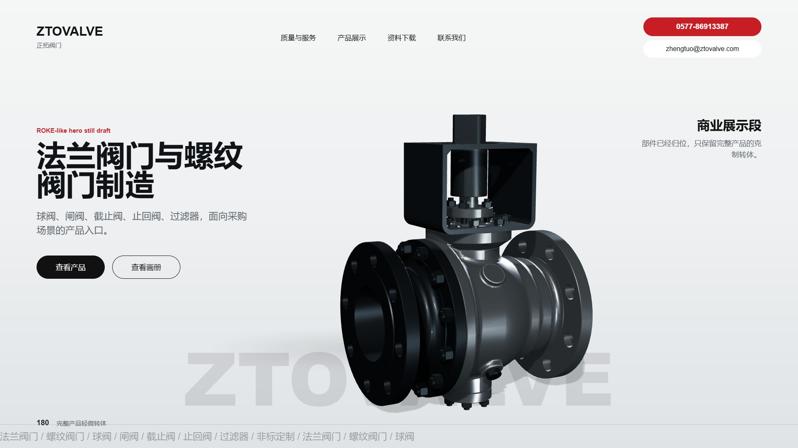

稳定主视觉
产品先以完整形态建立重量感和采购入口，避免一上来进入 CAD 拆解。
Goal 11 / Still direction draft
这版不渲染 240 帧，只用 6 张 still 判断新版方向是否成立： 主体稳定、轴向运动克制、零件不飞散、材质回到工业金属、最终帧能直接作为首页截图。

产品先以完整形态建立重量感和采购入口，避免一上来进入 CAD 拆解。

左右方向逐步归位，只保留一条主要运动轴，画面稳定性优先。

密封候选层做短距离显影，不做零件飞散；这是结构提示，不是维修顺序。
核心运动发生在合体后，旋转幅度小、方向固定，让“稳定轴线”成为记忆点。

所有部件已归位，只保留完整产品的克制转体和边缘高光。
产品、字标、CTA 稳定，作为决定是否进入 24 帧 animatic 的最后判断帧。
六张 still 必须都像完整商业画面，而不是中间过程截图；产品比例、文字层级和最终 hold 先过关。
若方向成立，下一步只做 24 帧低清 animatic，重点验证合体节奏、轴线提示和产品转体是否克制。
本稿不接首页、不替换 Goal 9 序列、不生成 240 帧，也不写未经客户确认的材质、认证或性能承诺。